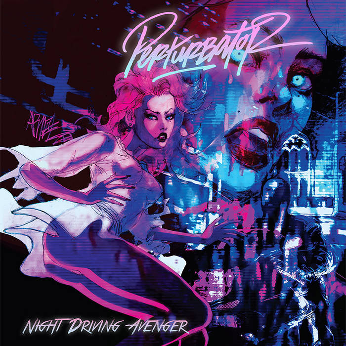
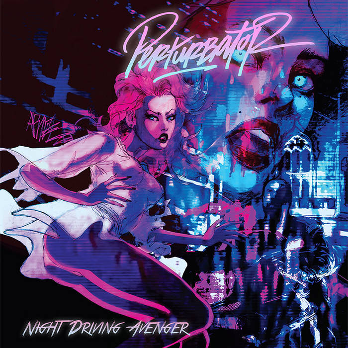

Intérêts & personnalité
Science-Fiction
Passionné par la science-fiction depuis très jeune, elle est pour moi un terrain d'exploration intellectuel.
J'y trouve à la fois une source d'évasion et un outil de réflexion : en projetant des futurs possibles,
nous pouvons mieuxcomprendre le présent et la place des humains dans des systèmes complexes en perpétuelle évolution.
Quelques humbles recommandations :
-Littérature : Cycle de Fondation d'Isaac Asimov, Neuromancer de W.Gibson, La couleur venue d'ailleurs de H.P.Lovecraft
-Cinéma : Matrix - Les Wachowski, Dune - Denis Villeneuve
-Musique : Perturbator, Carpenter Brut

 

E-Sport Compétitif
Je m'intéresse particulièrement à League of Legends dans sa dimension compétitive,
pour l’exigence stratégique et la précision qu’elle impose. Le haut niveau repose sur la coordination d’équipe,
l’anticipation des décisions adverses et l’adaptation permanente au rythme de la partie.
C'est un environnement nouveau mais en permanente évolution et professionalisation, et je suis particulièrement le développement de la Karmine Corp dans ce milieu.


Sport
Le sport et les activités en extérieur me permettent de garder un bon équilibre de vie.
Depuis mon plus jeune âge, j'ai fait du sport en club : Handball, Football, Basket, Volley, ...
Actuellement, je pratique la musculation de manière régulière, la randonée dès que j'en ai l'occasion ainsi que la natation.